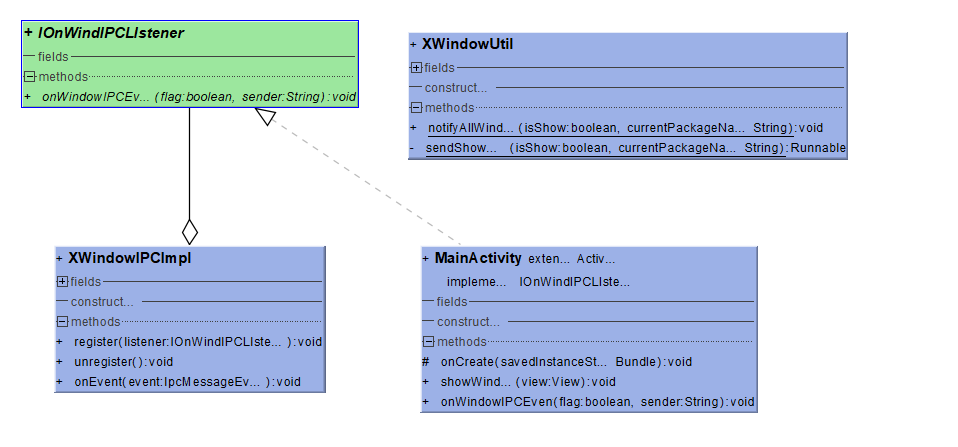

编写目的
- 解决个应用之间弹出窗口相互掩盖,相互之间无法通讯的问题.
文档范围
- 此文档之定义个应用之间弹出窗口达到互斥的规则.
实现原理
IPC See More detail :


- IOnWindowIPCListener
- 客户端需要实现的接口
- IOnWindowIPCListener.onWindowIPCEvent(boolean flag , String sender)
- flag 标识 true表示打开 false表示关闭
- Sender 表示发送者包名
- MainActivity
- 这里代表客户端程序
- XwindowIPCImpl
- 封装了EventBus注册,以及IPC发送消息的过程,客户端无需感知
目前互斥应用范围 [范围是指现在或者将来需要这项能力]
序号 | 应用名 | 包名 | 时间 | |
1 | 空调 | com.android.systemui | 2019/1/31 | |
2 | AI助手 | com.xiaopeng.aiassistant | 2019/1/31 | |
3 | 自动泊车 | com.xiaopeng.autopilot | 2019/1/31 | |
4 | 充电 | com.xiaopeng.chargecontrol | 2019/1/31 | |
5 | 车控 | com.xiaopeng.carcontrol | 2019/1/31 |
接入步骤
- 依赖libxui
- 完成XUI的初始化[可在应用启动时完成]
@Override
protected void onCreate(Bundle savedInstanceState) {
super.onCreate(savedInstanceState);
XUI.init(getApplicationContext());
setContentView(R.layout.activity_main);
}
- 实现IOnWindIPCLIstener.接口方法完成相应逻辑
/**
* @param flag 窗口打开还是关闭
* @param sender 消息发送者包名
*/
public void onWindowIPCEvent(boolean flag, String sender) {
//
Log.i("tyler.tang", "IPC one from " + sender);
}
- 注册需要实现的监听
XWindowIPCImpl ipc = new XWindowIPCImpl();
ipc.register(IOnWindIPCLIstener);
- 窗口show出来时调用方法通知其他应用
XWindowUtil.notifyAllWindow(true, "com.sny.ipcone");
- 窗口关闭时时调用方法通知其他应用
XWindowUtil.notifyAllWindow(false, "com.sny.ipcone");
客户端程序Demo